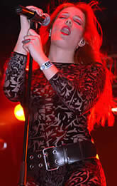

Entrevista
de Simone Simons à Ladies of Metal - 2004
Olá
Simone! Há quanto tempo a banda existe?
A
banda foi fundada em Abril de 2002. Eu me juntei a banda em
outubro de 2002. Então, nós ainda somos uma banda
nova. Mas parece que estamos juntos há muito tempo.
Primeiramente
a banda era chamada Sahara Dust, e depois se tornou
Epica. De onde veio o nome Epica? E por que mudaram
de nome?
Epica é um lugar do universo onde
nós podemos encontrar as respostas para as mais importantes
perguntas sobre a vida. Quando nós fomos ao estúdio
para gravar nosso álbum, nós não gostamos
de Sahara Dust. O Kamelot acabava de gravar seu álbum
no Gate Studio, e o álbum se chamava Epica. Imediatamente
nós adoramos o título. A maioria dos membros da
banda, incluindo eu, adora ouvir Kamelot. Então decidimos
mudar o nome para Epica. Desde que a maioria das letras de nossas
músicas são parecidas com o significado de Epica.
Conte mais
sobre o processo de sua carreira: há quanto tempo você
canta? Você tomou aulas de canto?
A primeira vez que eu cantei em público
foi quando eu tinha 12 anos. Foi meu último ano na escola
primária e nós estávamos apresentando um
musical, e eu cantei a música All At Once da Whitney
Houston. Nosso professor de música disse que eu realmente
precisava tomar aulas de canto, mas eu esperei até completar
14 anos. Eu tive aulas de canto de pop/jazz por um ano, mas
não gostei muito. Quando eu tinha 16 anos, ganhei um
CD do Nightwish,
e eu adorei a combinação de vocal clássico
feminino com metal. Essa foi a razão pela qual eu comecei
a tomar aulas de canto clássico, que eu ainda pratico.
Eu também já cantei num coral, mas Epica é
minha primeira banda.
Com Mark
Jansen na banda, todo mundo ficou imediatamente interessado
pelo Epica. E você ficou conhecida rapidamente. Como você
administrou esse sucesso?
Eu não sei como consegui. Eu apenas
trabalhei bastante na minha voz e performance, nós tocamos
em 90 apresentações num período muito curto.
Essa é a melhor maneira de aprender que você pode
ter.
Você
vai continuar com seus estudos, ou vai continuar apenas com
a música no futuro?
Nesse período a banda é mais
importante para mim. Nós estamos gravando nosso segundo
álbum e existem muitas turnês para se fazer. Quando
as coisas se acalmarem, eu vou me preocupar mais com os estudos,
mas eu ainda sou jovem e tenho muito tempo à frente.
Quais são
suas vocalistas preferidas?
Whitney Houston, Lisa Gerrard, Elis, Celine
Dion. Eu acho que as pessoas iriam me odiar ao ouvirem dizer
isso, mas Christina Aguilera é uma boa cantora. Eu não
gosto do jeito que ela se veste, mas o seu segundo álbum
é bom.
Você
toca algum instrumento, como piano ou violão por exemplo?
Eu bem que queria. Eu toquei flauta por
um ano, e essa flauta ainda existe em algum lugar do sótão.
Qual o futuro
próximo do Epica?
Agora nós estamos terminando a gravação
do nosso segundo álbum. Como eu escrevo músicas,
eu estou no estúdio Wolfsburg, na Alemanha. Depois que
a gravação terminar, nós faremos algumas
apresentações na Holanda em outubro, e vamos lançar
um DVD. Em novembro faremos uma turnê Européia.
Em dezembro faremos uma turnê no México, depois
algumas apresentações na Holanda, e talvez uma
turnê no Brasil. Então, estamos bastante ocupados
no momento, mas estamos adorando!
Extraída
de www.epicabr.cjb.net
Traduzida
e adaptada por Roxi